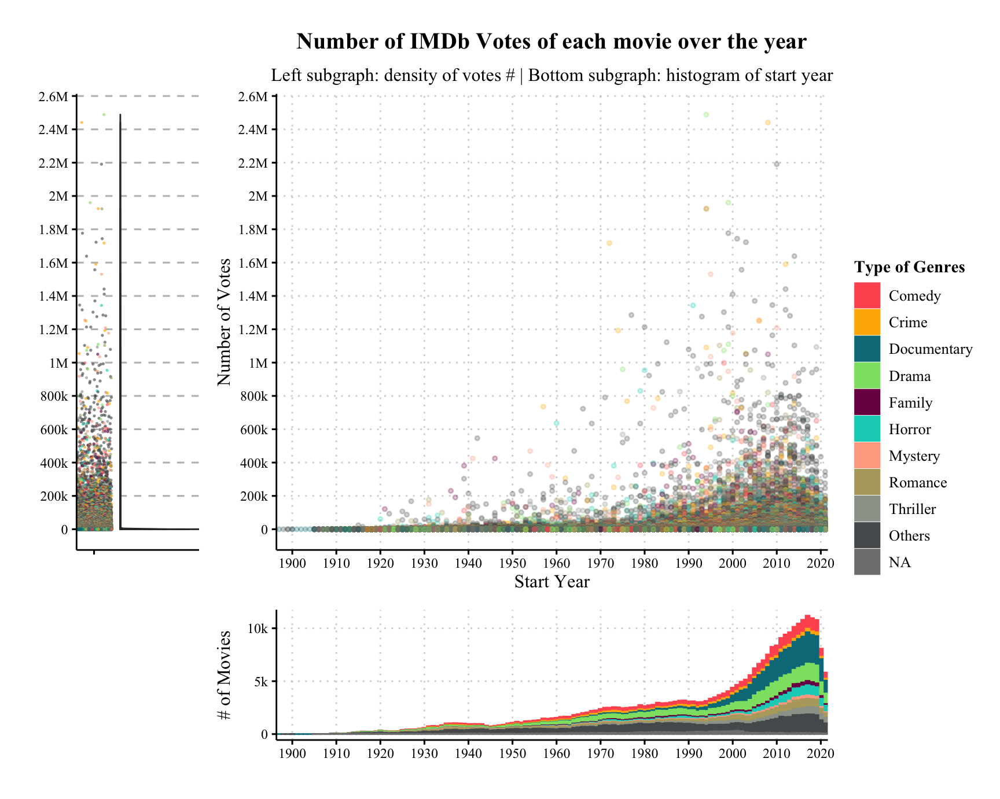

Chapter 5 Results
In this project, we want to discover the contributing factors that make a movie more successful than others. So we have raised the following questions.
What specific features do movies with higher profitability have?
What contributes to higher-rating films?
Is commercial success (high profit and high box offices) positively correlated with high rating or a trade-off?
5.1 Long tail effect: minority make up majority
First, lets talk about the votes contributed by.

It’s not surprising to find out that over 90% of the movies do not have votes over 500. We consider 1000 as a threshold to determine the movie is at least not unknown to the general public.
- For example, I asked several friends and none of them ever heard of The Golden Chance, which receives 666 votes and this number is higher than 85% of the movies in the entire imdb database.
5.2 What specific features do movies with higher profitability have?
First, we can use the budget data provided by the-numbers to estimate the cost, and then combine it with box offices to calculate the revenue of each movie.
Through IMDB’s main data, we can analyze the genres of movies, popularity of the star/director/screenwriter, or the runtime of movies that can bring high profits.
5.3 What contributes to higher-rating films?
- In addition to using the same data as the first question, we can also use review data provided by Stanford to discover how people think when lots of people give high scores to a movie.
- Also, there might be some relationship between the rating volume and rating in IMDB’s scoring system.